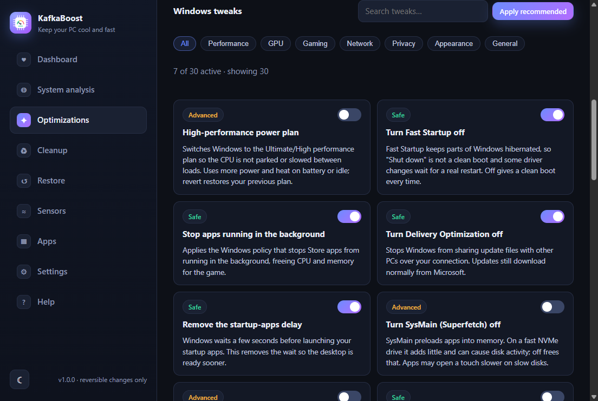
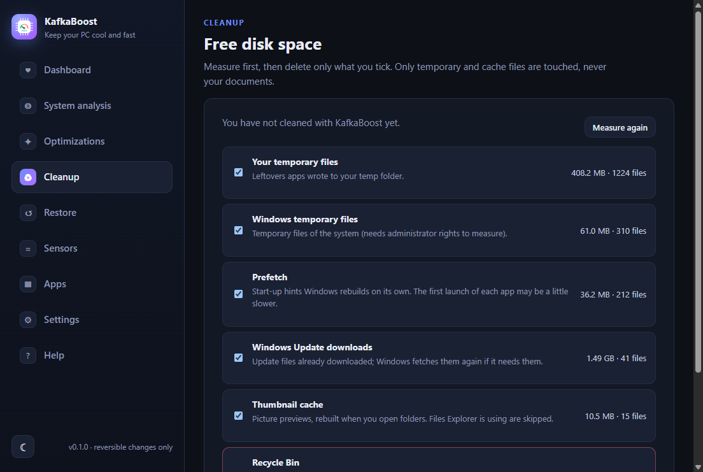
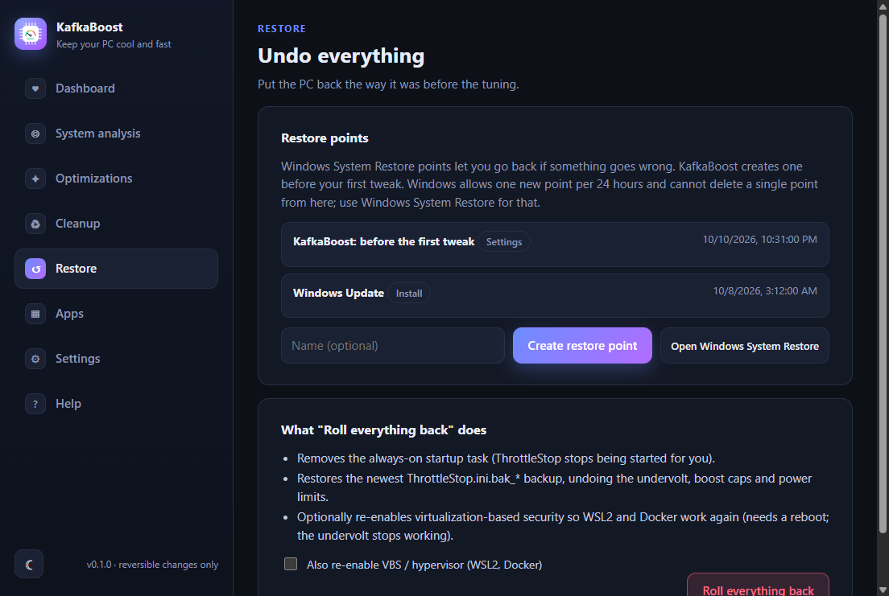
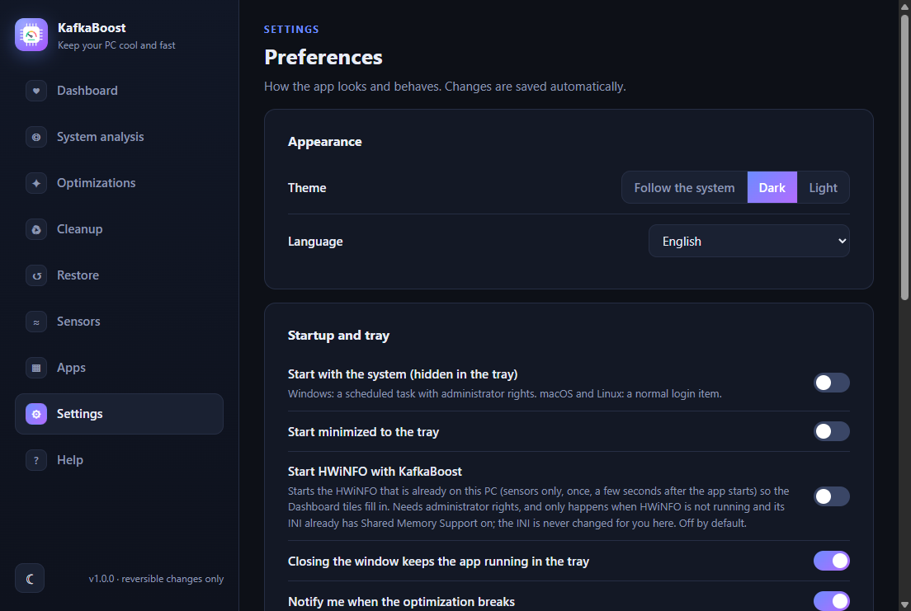
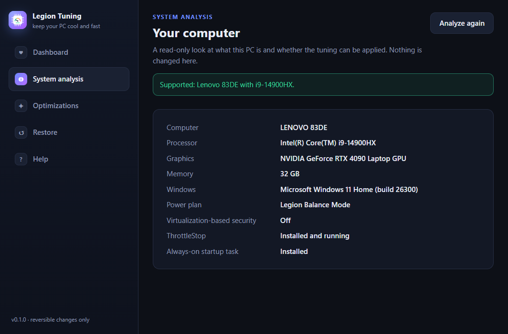

Windows tweaks catalog
30 tweaks in 7 categories with search and filters, a risk badge on each card and a toggle that applies or reverts it.
KafkaBoost applies Windows tweaks and a CPU thermal tuning, takes a restore point first, and keeps every change reversible. No account, no licence key, no telemetry.

A read-only look at your PC: hardware, Windows build, power plan and what is already tuned. Nothing is changed.
Before the first tweak, KafkaBoost asks Windows for a System Restore point. Windows allows one per 24 hours, and the app tells you when it was skipped.
Switch tweaks one by one, or use Apply recommended (safe tweaks only). Each card says what it does and the previous value is saved.
The Dashboard re-checks the settings, for example after a Windows update, and a Fix it button re-applies only what drifted.
Nothing to buy and nothing to unlock. You can read every script the app runs.
Each tweak states what it changes and its trade-off. The catalog is a data file, not a black box.
The previous value of every tweak is recorded, so turning it off restores what you had, not a guess.
21 safe, 7 advanced and 2 risky tweaks. Risky ones need two confirmations and are never part of Apply recommended.
Windows updates can reset tuning. The health check compares today with the setup and offers a one-click fix.
Settings stay on your PC. The only network calls are ones you start, like checking for an update.
The CPU thermal tuning (undervolt, boost caps, power limits) on a Lenovo Legion 83DE with an Intel Core i9-14900HX, in 19-minute CS2 sessions, logged with HWiNFO shared memory every 2 seconds.
These values belong to this chip and are not a recipe for another CPU. Details in the app docs · RESULTS.md

30 tweaks in 7 categories with search and filters, a risk badge on each card and a toggle that applies or reverts it.

Sizes are measured first. You delete only what you tick, and the Recycle Bin is flagged as dangerous.

List, create and open System Restore from the app. A safety point is requested before the first tweak.

The Dashboard notices when a Windows update undid the tuning and Fix it re-applies only what drifted. The thermal tuning itself is specific to the Legion 83DE.

Light, dark or system theme, English or Portuguese, tray behavior, notifications and a user-started update check.

A read-only report of the computer, processor, graphics, memory, Windows build and power plan. It changes nothing.
| System | Status | Details |
|---|---|---|
| Windows 11 | Supported | Everything in the app. Tested on Windows 11 build 26300 on one laptop only. |
| Windows 10 | Not tested | Most tweaks should apply, but none were run on Windows 10. Some need a minimum build. |
| macOS | Never run | The code for a reduced feature set (analysis, settings, help) was written but never run on a Mac. Treat it as unavailable. |
| Linux | Never run | Same: written, never run on Linux. Tweaks, Cleanup and Restore are Windows-only by design. |
Free, with no account. Every change can be reverted from the app.